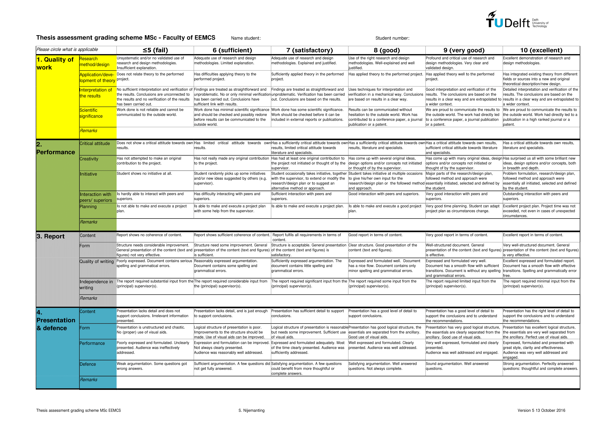

mdBook Quickstart
Welcome to the demo site for mkBook Quickstart.
View source:
Chapter 1
EH is a funny joker.
Content goes here.
Resume - Barry Tee

 Reference Code / Inspired by
Reference Code / Inspired by
CAA 06 Feb 2025 | weicong1@hotmail.com | LinkedIn
Work In Progress
Foo
Unofficial Survival Guide for TU Delft Students
Migrating to a new country for studies can be a daunting experience, but it can also be one of the most enriching experiences of your life. If you are considering studying at TU Delft, one of the top technical universities in the world, this blog post will guide you through the process of migrating to the Netherlands as a student.
Preparing for the Move
Before you embark on your journey to TU Delft, there are several things you should do to prepare. First, you should ensure that you have all the necessary documentation, including your passport, student visa, and acceptance letter from TU Delft. You should also research the cost of living in the Netherlands and plan your budget accordingly. Additionally, you may want to learn some basic Dutch phrases to help you navigate your new surroundings.
Cost of Living
https://www.numbeo.com/cost-of-living/
Recommended to bring a minimum of 1000€ for first month of living expenses (excluding Rent). Bring 2000€ just in case bank account is not set up within the first month due to delays.
Feel free to use Digital Bank Apps like Revolut or WISE with their MasterCard or VISA Options.
Please note that Albert Heijn (a popular supermarket) is an exception that uses Maestro Card (Get one from Dutch Banks) and do not accept MasterCard or VISA.
Sign Up for Introduction Program
Try not to skip it as seniors will guide you on Campus Discovery, Brightspace Pulse and Portal Navigation and Bike Purchase. You can follow the TU Delft IP on Instagram to get a feel of Introduction Programme based on previous year’s programme
Housing Portals
| Housing organization | Trust Pilot | Student acc. | Couple | Family | Shared |
|---|---|---|---|---|---|
| RoomPlaza | 4.4 | X | X | X | X |
| Bjornd Brokerage | NA | X | X | ||
| Funda | 1.9 | X | X | X | X |
| Pararius - Homeland Real Estate ^ | 4.7 | X | X | X | |
| Holland Homestay | NA | X | X | X | |
| Rooms in Delft - Holidays / Rent Slam | 0 | X | |||
| Rooms.nl - Idealis vs DUWO/XIOR | 3.3 | X | X | X | X |
| Kamernet.nl | 3.5 | X | X | ||
| Student Housing The Hague | 4.3 | X | X | X | |
| The Social Hub - Holidays | NA | X | X | ||
| 4-Freedom Property Management | NA | X | X | X | X |
| Be Home | NA | X | X | X | |
| Direct Living | NA | X | X | X | X |
| Homelets.nl | 2.9 | X | X | X | X |
| HometoGo - Not Private and Holidays | 2.4 | ||||
| Hostel Delft - Not Private and Holidays | NA | ||||
| Housing source | 2.3 | X | X | X | |
| HousingAnywhere | 3.7 | X | X | X | X |
| Huurwoningen.nl / Huurportaal.nl | 4.4 | X | X | X | X |
| Kamer.nl | 0 | X | X | X | |
| Stadium | X | X | |||
| MaliepaardBrokers | NA | X | X | ||
| MB275 | NA | X | X | ||
| Old Delft Brokerage | NA | X | X | ||
| OurDomain Rotterdam Blaak - Holidays | NA | X | X | ||
| Villaci | X | X | |||
| Plaza Resident Services - Not Private | 0 | X | |||
| Rock - Fixed Group | NA | X | X | X | X |
| Sealed Management | NA | X | |||
| Son's Real Estate | NA | X | X | ||
| vestia | 1.9 | X | X | X |
Apps
New App to Meet New Friends from All Over the World- https://www.goinconnect.com/
| My TU Delft | Brightspace Pulse | Uni-Life (Not as useful as Clubs) | OVPay (Not as useful as Kiosk) | NS (Primary) | 9292 (Secondary) | Google Translate |
|---|
Weather in Delft 2023
Compare 2023 Weather with latest weather on https://www.buienradar.nl/ website to see effects of Global Warming.
| Month | Temperature | Rainy Days | Dry Days | Snowy Days | Rainfall (mm) | Weather |
|---|---|---|---|---|---|---|
| January | 6° / 4° | 10 | 18 | 4 | 107 | Awful |
| February | 6° / 3° | 8 | 16 | 4 | 78 | Awful |
| March | 9° / 5° | 6 | 24 | 1 | 67 | Ok |
| April | 13° / 7° | 3 | 26 | 1 | 45 | Ok |
| May | 15° / 10° | 5 | 26 | 0 | 79 | Good |
| June | 18° / 13° | 5 | 25 | 0 | 90 | Good |
| July | 20° / 16° | 7 | 24 | 0 | 116 | Ok |
| August | 21° / 16° | 7 | 24 | 0 | 138 | Ok |
| September | 19° / 14° | 6 | 24 | 0 | 109 | Good |
| October | 15° / 11° | 8 | 23 | 0 | 124 | Ok |
| November | 11° / 8° | 7 | 22 | 1 | 115 | Bad |
| December | 8° / 5° | 10 | 18 | 3 | 118 | Awful |
Things to Bring to TU Delft
| S/N | Items to Bring | S/N | Items to Bring |
|---|---|---|---|
| 1 | Passport | 7 | Birth (Compulsory) + Marriage Cert. (Optional) |
| 2 | VISA from Embassy | 8 | Driver's License / International Driving Permit 1 Year |
| 3 | High School & Uni Certs | 9 | Handphone / Laptop / Chargers |
| 4 | TU Delft Official Letter | 10 | Clothes for Summer & Winter |
| 5 | Insurance Papers | 11 | Medicine |
| 6 | Housing Contract + Host ID Hardcopy | 12 | Money - 10K USD < |
Arriving in the Netherlands
Once you arrive in the Netherlands, you will need to register with the municipality you live in within five days. You will also need to open a Dutch bank account and obtain health insurance.
Getting Around Netherlands i.e. to Delft by Train
Look at this Map to Travel from Schipol to Delft. Delft is in between Den Haag and Rotterdam.
The Netherlands by train | Train Tickets & Tours | HappyRail
Register With The Municipality You Live In
For example, living in Rijswijk needed me to submit the following documents:
1 - Passport
2 - Signed Rental Contract + Printed Copy of ID (no driving license) of the Landlord
3 - VISA / Residence Permit
4 - Municipal Registration Form
5 - Permission of Landlord Form
You can book at appointment with Klant Contact Centrum (Rijswijk) via kcc@rijswijk.nl
Collection of Residence Permit
1 Golden Word of Advice - Reach there as early as possible and ignore the mass appointment time as all universities in Netherlands were queuing in the open at Utrecht in 2023 to collect their Residence Permit from IND. The queue was insane. You have been warned.
Bank Account
Open the ABN AMRO iOS App and tap on "Create an Account."
Take a picture of your Passport, followed by your Face.
Enter your tax identification number (BSN) or do so within 120 days.
Choose either personal (Current / Student*) or business account.
Review the terms and conditions, then accept them.
Set up your login credentials, including a username and password.
Finally, confirm your account creation by following the instructions sent to your registered email or phone number.
ABN AMRO will send 4 separate letters by post within 5 working days^:
1 - Your debit card 2 - The PIN for your debit card 3 - The activation code for your debit card 4 - E.dentifier: a device that allows you to log into Internet Banking and confirm orders without smartphone.
^There are instances where people have waited for 14 days or more.
Both ABN AMRO and ING student accounts support Apple Pay. The alternative is the ING Student Account can be created via the ING iOS App.
Transport - OV-Chipkaart
A personal OV-Chipkaart application costs € 7.50 and is valid for five years.
To save 20% off on all HTM Tram and Train Rides cost on trams and trains provided by HTM, you can buy their HTM Monthly Pass at 3€. Look at the map below to see all the Tram and Train Lines from Delft.
To save 40% off NS Trains during off-peak hours, weekends and public holidays, you can buy their Dal Voordeel at 2.50€.
Refer to HTM Tram and Bus Map Below.
TUDelft-Survival Guide-HTM.pdf
Phone Plan
The top 3 telecommunications providers are KPN, Vodafone and T-Mobile. Lebara is a mobile virtual network operator (MVNO) that signed a business agreement with KPN. Lebara offers an affordable SIM-Only Plan (1 Month / 2 Years). Lebara offers 4G Extra Fast Speeds at 0.50€ and Data Cap Service at 0.50€ in 2023. You can collect free 200MB Lebara Sim Cards during University Introduction Week or Residence Permit Collection Day
Cycling
Buy
Second-Hand - Facebook Groups €-€€ | Marketplaats €€€
Second-Hand - Trift Shops (Stichting Kringloopbedrijf, Kringloopwinkel RataPlan) €-€€
First Hand - Decathlon €€€ | Bicycle Stores €€€€
Rent

Things to Note Prior to Purchase
1 - There are bicycles that only have reverse paddle brakes ie braking by paddling backwards. For inexperienced cyclists, it will be good to buy a second-hand bicycle with at least one hand brake.
2 - The law states that cycling at night requires a front light (WHITE LED) and a rear light (RED LED).
3 - A rear lock designed bicycle to lock the rear wheel is convenient while the second lock is usually a chain lock needed to lock the front wheel and frame to bicycle stands during parking.
4 - Fenders are necessary to prevent rain from splashing upwards and wetting your clothes.
5 - Racks for Front and Rear are convenient to cable tie a Bicycle Crate.
6 - A single chain bicycle with no option to change gears is good for maintenance and is less prone to breaking down. Parking bicycle under shelter also minimises contact with rainwater that causes rust to form.
7 - A Second-Hand City Bicycle with features mentioned above cost 150€ as observed during Introduction Week 2023 organised by University. The contact is here - Laan van Waalhaven 213a 2497 GL Den Haag Ypenburg in Kringloop Rataplan | reparatie@op-nieuw.nl | www.op-nieuw.nl
8 - Cost of Accessories - Bicycle Crate from Aldi (8.99€) | Bicycle Bell from SoLow (2€) | Bicycle Pump from Action (6.98€).
9 - Final note is that the image shows 28” wheels. A person with a height of 165cm barely steps on the floor. Please ride the bicycle to check level of comfort and safety before buying any bicycle. If you see a huge dent on the chain guard or frame, it is highly recommended not to buy it as it may have been badly abused or damaged.
{kind=link}
Rules for Cyclists
1 - Keep to the right side of the road while riding unless overtaking. (Netherlands practises right hand drive). Do not travel in the wrong direction unless certain bicycles are splitted to be bidirectional. 2 - Use hand signals to indicate when turning, stopping, or overtaking. Please look over your shoulders when doing so. 3 - There are signs that prevent parking of bicycles. Furthermore, parking in cities have demarcated painted areas. Do not park them outside the painted box outline as city authorities can confiscate your bicycles by first pasting a warning tag followed by city official movers who load the tagged bicycles.
Supermarkets
| € | €€ | €€€ | €€€€ | |||
|---|---|---|---|---|---|---|
| ALDI | DIRK | COOP | SPAR in TU Delft | |||
| LIDL | JUMBO | PLUS | AH To Go | |||
| Thu/Sat Market | Albert Heijn (AH) | SPAR |
Things Worth Buying
| Things Worth Buying in ALDI (2023) | Things Worth Buying in Albert Heijn (2023) |
|---|---|
| Frituurolie (Frying Oil 2L) - 5.32 ^ | ToiletPapier (Toilet Paper 9 Roll 3 Roll 200 Pieces Per Roll ) - 3.95 |
| Wokgarnalen (Wok Shrimp 200g vs AH 150g) - 4.49 ^ | Karbonades (Pork Chops - 400g) - 3.15 |
| Babi Panggang (Roast Pork Fried Rice) - 3.79 ^ | Koh TH Red Curry (Thai Red Curry Sauce 225g) - 2.09 |
| Varkensfiletlapjes (Pork Fillet 400g) - 2.99 ^ | AH Spaghetti Bolognese - 2.49 |
| Mager Hoh Gehakt (Lean Mince Pork Meat 300g) - 2.69 x | AH Bouillon (Beef Bouillon) - 0.60 |
| Lasagne Bologn. - 2.49 x | Spa Reine (Water 1L) - 1.05 |
| Ribkarbonade (Pork Ribs 280g) - 2.36 x | |
| Appelsap Trobel (Apple Juice) - 1.69 x | |
| Honing Hoepels (Honey Hoops) - 1.49 x | |
| Hub Chocopops - 1.04 ^ | |
| Waspeen (Carrot) - 0.99 ^ | |
| Spaghetti - 0.99 x | |
| Sojadrink Naturel (Soyabean Milk Sweet) - 0.89 ^ | |
| Chinese Mie (Chinese Noodles) - 0.79 ^ | |
| Hub Pedaalemmerzakken (Pedal Bin Plastic Packets) - 0.77 x | |
| Items marked with ^ are upvoted whilst | |
| items marked with x can be found at the equivalent price in Albert Heijn. |
Household Products and Tools
| € | €€ | €€€ | €€€€ | |||
|---|---|---|---|---|---|---|
| Action | Ikea | Hema | Blokker | |||
| Praxis | Ako |
Things Worth Buying in Action
- LSC Smart Connect LED Moodlight - 10.95
- LSC Smart Connect Stekker Schakel (Plug Switch) - 7.95
- Fietspomp (Bicycle Pump) - 6.98
- Droogrek Hangend 6m (Drying Rack) - 3.99
- hr bad/Saunaslipper (Slippers) - 3.99
- Stekkerdoos (Power Strip) - 3.89
- Lunchbox to go Kunststof - 2.99
- Deurkapstok met 4 haken metaal (Door Hanger Hook) - 2.49
- Panasonic Batterijen (AAA Battery 10 pieces) - 2.28
- Werckmann Rolmaat (Measuring Tape 5m) - 2.18
- Kledinghangers 10st (Clothes Hanger 10 pieces) - 1.89
- Day Scharenset 3 DLG RVS - 1.59
- Dumil Aluminiumfoile (Aluminium Foil 18m) - 1.44
- Gootsteenzeef met filter (Sink Strainer) - 1.39
- Colgate Tandpasta (Toothpaste 75ml) - 0.99
- Boodschhappentas (Shopping Bag) - 0.79
Museum Pass
It is advisable to get a 1-Year Museum Pass to visit all museums in Netherlands.
Travel Netherlands
You should also visit attractions in Delft to have an enriching experience in your study life.
Adjusting to Student Life at TU Delft
Adjusting to student life at TU Delft can be challenging, but there are many resources available to help you. The university offers a wide range of support services, including academic support, career services, and mental health support. You can also take advantage of cultural activities and events on campus to help you integrate into the TU Delft community.
WiFi
All WiFi Manuals on TU Delft Website
Login with ‘NetID@tudelft.nl’ and your password Android - Set EAP to PEAP → Set Phase 2 to MSCHAPV2 → Set domain to ‘tudelft.nl’ → Set CA certificate to ‘Use System Certificates’ iOS and Others are Simpler to Configure
TimeTable
Find it on mytimetable.tudelft.nl → Click ‘+ Add Timetable’ → ‘Programme of Study’ → Filter on Dept ‘EEMCS’
Places to Study
Find it on https://spacefinder.tudelft.nl/en/buildings/36-eemcs/
Printing
Mtd 1 - Upload file to myprint.tudelft.nl (login with NetID) Mtd 2 - TU Delft PC → Open Print File → Go to Print → Select Printer “FollowMe on https://webprint.tudelft.nl” → Press Print (More information is available on webprint.tudelft.nl)
Calculator
Graphical/Programmable calculators are NOT allowed in exams.
Casio FX-82MS is suitable for exams.***
*** This calculator is inferior to Casio FX-991EX as it lacks one function - solving quadratic equations.
X
Compare prices in 2025 with the prices of 2023 shown below to see effects of inflation.
X-Subscription - 1 Week (9€) | 1 Month (29€) | 3 Months (72€) | 6 Months (111€) | 1 Year (161€)
Fitness Facilities - 1 Week (8€) | 1 Month (27€) | 3 Months (64€) | 6 Months (100€) | 1 Year (144€)
Fitness Facilities Subscription requires X-Subscription
Here is a website link of all Sports and Cultural Associations in X.
Academic Calendar 2023-2024

For 2025-2026, Here is the Website Link
Entire Map of TU Delft
Food

Recommendation: Private Food Outlets Between Civil Engineering and Echo offer good food at good prices.
- The Hangout - Vietnamese & More - Currently Serving 10.95€ Lunch Meals
- Food Station
| S/N | FACULTY / BUILDING | AVAILABLE FOOD OUTLETS |
|---|---|---|
| 1 | ARCHITECTURE AND THE BUILT ENVIRONMENT (ARCH) | FOODTURE & COFFEE & CO |
| 2 | TECHNOLOGY, POLICY AND MANAGEMENT (TPM) | GOODISH |
| 3 | INDUSTRIAL DESIGN ENGINEERING (IDE) | FOODSQUARE |
| 4 | COFFEE & BIKES | COFFEE-STAR |
| 5 | PULSE | FOOD MARKET |
| 6 | MECHANICAL ENGINEERING (ME) | LEMONS & BEANS |
| 7 | AULA CONFERENCE CENTRE | FOODSQUARE & FACULTY CLUB |
| 8 | ELECTRIC ENGINEERING, MATHEMATICS & COMPUTER SCIENCE (EEMCS) | GOODISH & COFFEE & CO |
| 9 | CIVIL ENGINEERING AND GEOSCIENCES (CEG) | FOODSQUARE & LEMONS & BEANS |
| 10 | ЕСНО | FOODTURE & COFFEE & CO |
| 11 | AEROSPACE ENGINEERING (AE) | GOODISH |
| 12 | THE FELLOWSHIP | FOOD MARKET |
| 13 | APPLIED SCIENCES (AS) | GOODISH |
| 14 | REACTOR INSTITUTE DELFT | POWERKITCHEN |
Clubs
TUDelft-SurvivalGuide-ClubsTUDelft.csv
Research Groups
TUDelft-SurvivalGuide-ResearchGroupsEEMCS.csv
Conclusion
Migrating to TU Delft as a student can be an exciting and rewarding experience, but it requires careful preparation and adjustment. By following the steps outlined in this blog post and taking advantage of the resources available to you, you can make a smooth transition to student life in the Netherlands. Good luck on your journey!
Your Unofficial Guide to EEMCS in TU Delft
Entering the Faculty of Electrical Engineering, Mathematics, and Computer Science (EEMCS) at TU Delft can be thrilling and demanding. To excel in this rigorous environment, follow these key tips:
Curriculum in EEMCS - CESE
NEW UPDATE: The new study guide starting from the 2025-2026 academic year provides information about the curriculum at https://studyguide.tudelft.nl/
One of the most informative website is the course browser search. By following the search parameters, you will know the compulsory courses that you have to take in EEMCS - Computer and Embedded Systems Engineering Masters. Please note that if your Bachelors Specialization was in Electrical Engineering, you are required to take Software Fundamentals and vice versa, Computer Science undergraduates would need to take Hardware Fundamentals in Semester 1.

Alternate View of Programme Courses
First Year (60 EC)
| Q1 | Q2 | Q3 | Q4 |
|---|---|---|---|
| Adv. Computing Systems 5 EC | Real Time Systems 5 EC | Embedded Systems Lab 5 EC | Effective & Responsible Engineering 5 EC |
| Systems Engineering 5 EC | Software Systems 5 EC | Computer Arithmetic 5 EC | Processor Design Project 5 EC |
| Software / Hardware Fundamentals 5 EC | Specialization 5 EC | Specialization 5 EC | Specialization 5 EC |
Second Year (60 EC)
| Q1 | Q2 | Q3 | Q4 |
|---|---|---|---|
| Joint Interdisciplinary Project or | Thesis Project 45 EC | ||
| Internship or Elective Courses 15 EC |
Then you go to Brightspace to enrol into the courses. Attend the lectures and finish all the assignments, quizzes, tests and exams to attain the necessary credits. 60 Credits are required for Year 1 and another 60 Credits for Year 2.
TU Delft students need to fill up the Individual Exam Programme (IEP) along the course of their studies. This is the medium to report your desired track and obtain approval from
- Masters Coordinator
- Thesis Advisor
- Board of Examiners
Essential - Laptops
TU Delft provides laptop advice and sale of laptops for your study at https://www.tudelft.nl/en/student/my-study-me/study-tools/laptop-project/models-2025-2026
Essential - Operating System
In the CESE Masters Programme, you will be working on projects that require Linux. The teaching team strongly recommend using it. Based on experience, it is best to NOT deviate from that recommendation.
A stable version Ubuntu 22.04 has been used for many projects and thus been recommended for basic beginners to use. Ubuntu 22.04 ISO file can be downloaded here.
To install it, follow this tutorial by Ubuntu. This method uses a 12GB or above thumb-drive which renders it useless as a portable conventional storage media device. Do not delete the Ubuntu 22.04 USB stick as you or your friends will consistently need to reinstall Linux if IRREVERSIBLE mistakes causes failure in your project to run.
Essential - Software
In the CESE Masters Programme, you will be programming in RUST. For starters, a common IDE used by many is VSCode. Let me share with you a competitive IDE called CLion.
1A - CLion Integrated Development Environment (IDE)
https://www.jetbrains.com/help/clion/installation-guide.html#toolbox
For Electrical Engineers, the JetBrains Toolbox App is the recommended tool to install JetBrains products.
However, if you are comfortable with installing it via the command line terminal, feel free to install using the Standalone Installation method.
To enable CLion, you first need to register a free student account with your student email. With your new student account, you can login to activate your JetBrains account on CLion.

Install the Rust Plugin. Access the Plugin Window via the Settings Gear icon on the top-right of CLion IDE Window.

2 - LaTeX
Most (if not all) projects require a report to be written to consolidate all the work done. Although small assignments only require 1-2 pages in the report, most (if not all) projects usually require 4 - 20 pages in the report. In fact, your final year thesis may even reach 100 or more pages. As such, students use Overleaf, an online LaTeX editor that allows for real-time collaboration and online compiling of LaTeX documents.
Similar to CLion, you can access Overleaf free by login in with SSO using your student account.
LaTeX uses a typesetting system. That means you need to study a markup language to define the structure and appearance of the document unlike conventional Microsoft Word or Google Docs.
To overcome a steep learning curve of a complex tool, start off with Overleaf Templates. Find it hard to write equations in LaTeX, search for LaTeX Equation Editors. If you see an error, please be pro-active to resolve them. Or else, the standalone errors may eventually accumulate to even cause failure to compile your report.
This tutorial online made in 2024 by Xiong Ying is very clean and easy to read.
3 - GitLab
All code uploads are done on GitLab.
To allow CLion IDE to access GitLab, click on your profile icon → Preferences → SSH Keys.
Follow this tutorial to create SSH Key on Command Prompt. E.g. ssh-keygen -t ed25519
Create filename. Access file XXX.pub in the .ssh folder and copy-paste it into the new key on SSH Keys in GitLab by following another tutorial here.
To understand Git for coding, here are four websites that provide visual explanations.
- learngitbranching.js.org
- ohmygit.org
- marklodato.github.io
- onlywei.github.io
4 - Messaging Apps
In CESE, Microsoft Teams (Used in Systems Engineering), Discord (Stopped since 2025), and WhatsApp (Only Amongst Students) are used.
5 - OBS
When video presentations are required for projects, OBS can be used to record video presentations with screen resolution of 1920 x 1080 px (Depending on Laptop Brand and Model)
Captions can be added to OBS using Maestra: https://maestra.ai/tools/web-captioner
Miscellaneous
Free Guides
From data to Viz | Find the graphic you need
Tutorial – Typst Documentation
Termination of Enrolment
As a student at TU Delft, you are responsible for submitting a request for termination of enrolment on Studielink if you no longer wish to be enrolled and will not follow any courses or take examinations.
Important Deadline: Submit your request before 23.59 CET/CEST on the last day of the month. Termination takes effect on the first day of the following month. For example, if you request termination on 26 March, your enrolment will be terminated by 1 April.
When to terminate: You should terminate when you want to stop your study (personal reasons, programme not the right fit) or when you're finished (completed all courses and thesis defense, awaiting diploma, or confident you've passed your last exam). ⚠️ Important: Your enrolment will NOT automatically be terminated after graduation.
⚠️ Critical Note: If you submit a request after 31 May, your enrolment can only be terminated from 1 July or 1 August, and you will not receive a refund for July and August.
Campus Card and Net-ID: Your Campus Card and student Net-ID will be deactivated after 3 months. After this period, they won't work even if you re-enrol.
For more information, visit the official TU Delft termination page.
TU Delft for Life Portal
TU Delft for Life is the global online community connecting TU Delft alumni from around the world. This portal serves as your lifelong connection to the university and fellow alumni.
Key Features:
- Reconnect with former classmates and study friends
- Expand your professional network with alumni worldwide
- Stay informed with the latest news from your alma mater
- Access alumni events and career support opportunities
- Lifelong learning through specially selected courses and MOOCs
- Update your contact details to receive invites for local alumni events and the alumni magazine
Being a Delft engineer is not something for the short run; it is something you are for life, something to be proud of! TU Delft alumni live and work all over the world, and this platform helps you maintain those valuable connections.
To get started, create an account or log in at tudelftforlife.nl to access all features of this community. Whether you've just graduated or have been working for years, this portal keeps you connected to the TU Delft community and provides ongoing professional and personal development opportunities.
For support, contact the Alumni Relations team at alumnirelations@tudelft.nl or visit alumni.tudelft.nl.
Career Guide
You can keep a look-out for career related events i.e. EEMCS Recruitment Day, Delft Career Days. Not all are free. So, please check for the programme and register if interested.
Another portal you can use is TU Delft Your Career Portal
Conclusion
Life in TU Delft can be hectic and packed. The learning curve may be extremely daunting, but it may be less so with careful preparation and adjustment. By following the steps outlined in this blog post and taking advantage of the resources available to you, you can make a smooth transition to student life and do well in the CESE Programme. Good luck on your journey!
Coding Guidelines
Reference - SerenityOS
Human Language Policy
- The official documentation language is English with ISO 8601 dates and metric units.
- Use proper spelling, grammar, and punctuation. Please use tooling (spell checkers, etc) to catch simple mistakes.
- Write in an authoritative and technical tone.
Code and submission
Do:
- Conform to the coding style found below. Use clang-format (version 16 or later) to automatically format C++ files.
- Choose expressive variable, function and class names. Make it easy to understand the logic flow of the code.
- Split your changes into separate, atomic commits (i.e. A commit per feature or fix, where the build, tests and the system are all functioning).
- Capitalise the subject line with a maximum of 72 characters.
- Use the body in a commit section to explain what and why, and not how.
- Make sure your commits are rebased on the main branch.
- Squash your commits when making revisions after a patch review.
Don't:
- Use the repository as a backup
- Iterate excessively on your design across multiple commits.
- Use imprecise words like "refactor" or "fix" to avoid explaining what's being changed.
- End commit message subject lines with a period.
- Include commented-out code.
- Write in C. (Instead, take advantage of C++'s amenities, and don't limit yourself to the standard C library.) Use C++ 20 or later
- Move code around without quantifiable benefit.
C++ coding style
Shamelessly stolen from WebKit
Indenting
- Use spaces to indent. Tabs should not appear in code files (with the exception of files that require them e.g. Makefiles).
- The indent size is 4 spaces.
- Code editors should be configured to expand tabs that you type to 4 spaces.
Braces
- Function definitions – open and close braces should be on lines by themselves. Do not put the open brace on the same line as the function signature. For example:
Right:
void foo()
{
// do stuff
}
Wrong:
void foo() {
// do stuff
}
- Loop control structures, including for, while and do statements – the open brace should go on the same line as the as the control structure.
Right:
for (int i = 0; i < 10; i++) {
// do stuff
}
Wrong:
for (int i = 0; i < 10; i++)
{
// do stuff
}
- If/else statements - as above, but if there is an else clause, the close brace should go on the same line as the else. Also, one-line if or else clauses should not get braces.
Right:
if (timeToGetCoffee) {
buyCoffee(&coffee);
chugIt(coffee);
} else if (timeToGoHome)
// comment on else case
outtaHere = true;
Wrong:
if (timeToGetCoffee)
{
buyCoffee(&coffee);
chugIt(coffee);
// comment on else case
} else if (timeToGoHome)
{
outtaHere = true;
}
if (timeToGetCoffee) {
}
else
// comment on else case
if (timeToGoHome)
outtaHere = true;
Parentheses
- Function declarations and calls – do not use any spaces between the name and the open paren, inside the parentheses, or before commas that separate arguments. Do use a single space after commas that separate arguments.
Right:
int myFunction(int arg1, float arg2);
void noArgFunction(); // for C++
void noArgFunction(void); // for C
Wrong:
int myFunction (int arg1, float arg2);
int myFunction( int arg1 , float arg2 );
void noArgFunction ();
- Control structures, such as if, while, do and switch – use a single space before the open paren, but no spaces inside the parentheses.
Null, false and 0
- In C++, the null pointer value should be written as
nullptr. In C it should be written asNULL. - True and false values of type bool (common in C and C++), or just generic true/false values, should be written as true and false.
- Tests for null pointers, false values and 0 values should all be done diretly, not through an inqueality or equality comparison.
Right:
// test for true
if (foo->isSomething()) {
// code
}
// test for false
if (!foo->isSomething()) {
// code
}
// test for non-null
if (ptr) {
// code
}
// test for null
if (!ptr) {
// code
}
// test for nonzero
if (count) {
// code
}
// test for zero
if (!count) {
// code
}
Wrong:
if (foo->isSomething() == true) {
// code
}
if (foo->isSomething() != false) {
// code
}
if (p == NULL) {
// code
}
if (nil != p) {
// code
}
if (count == 0) {
// code
}
Names
- General Rule: With very few exceptions, prefer embedded capitals instead of underscores for class, function and variable names.
- C++ classes, interfaces and protocols, and other type names – these names should start with a capital letter and use InterCaps.
Right:
class MyImportantClass;
Wrong:
class My_important_class;
class myImportantClass;
- Local variables should use interCaps, but the first word should start with a lowercase letter, like this:
Right:
int myInt;
Wrong:
int MyInt;
int my_int;
- Free function names in C++ should follow the same naming conventions as local variables. Most functions should be named to sound like verb phrases, like “openDoor” or “walkAroundTheBlock”. (getters, setters, predicates?)
- C++ data members should be named like local variables, but with a prefix of m_.
- C++ member functions should follow the same naming convention as free functions.
- Pointer and reference types – pointer types should be written with a space between the type name and the * (so the * is adjacent to the following identifier if any). For reference types, the & goes next to the type name.
- Enum members should user InterCaps with an initial capital letter.
- #defined constants should use all uppercase names with words separated by underscores.
- Macros that expand to function calls or other non-constant computation: these should be (1) avoided if possible, (2) named like functions, and (3) should have parentheses at the end, even if they take no arguments. Note that usually it is preferrable to use an inline function in such cases instead of a macro.
Right:
#define WBStopButtonTitle() lookupString("Stop", "Go/Stop button title")
Wrong:
#define WB_STOP_BUTTON_TITLE lookupString("Stop", "Go/Stop button title")
#define WBStopButtontitle lookupString("Stop", "Go/Stop button title")
- Acronyms in names: If an identifier includes an acronym, make the acronym all-uppercase or all-lowercase, depending on whether a word in that position would be capitalized or not.
Right:
urlVariable
myURLAccessor:
Wrong:
uRLVariable
myUrlAccessor:
Modern C++ Features (C++20/23)
Preferred Features
- Use
autofor type deduction when the type is obvious from context - Prefer
std::unique_ptrandstd::shared_ptrover raw pointers - Use range-based for loops instead of traditional for loops when possible
- Use
nullptrinstead of0for null pointers - Use
constexprfor compile-time computations - Use
std::string_viewfor read-only string parameters - Use structured bindings for cleaner tuple/struct unpacking
Example:
// Modern C++ approach
auto processData(const std::string_view& data) -> std::unique_ptr<Result> {
auto [success, value] = parseInput(data);
if (!success) {
return nullptr;
}
return std::make_unique<Result>(value);
}
Doxygen comments
- Each class, struct, enum and function should be documented with a Doxygen comment.
- Comments in general, and doxygen comments in particlar, should be written to explain the function and purpose of the code. If comments are needed to explain the internal logic of a special algorithm, do it in comments inside the function, just above the piece of code in question.
- A Doxygen comment block should be defined by a comment block with three forward slashes (
///) at the beginning of each line. - Parameters in the documentation block are identified by a
@.
Right:
/// Calculate surface area of rectangle
///
/// @x The horizontal dimension in metres
/// @y The vertical dimension in metres
Wrong:
/**
* Calculate surface area of rectangle
*
* \x The horizontal dimension in metres
* \y The vertical dimension in metres
**/
Security Best Practices
- Validate all inputs - Never trust external data
- Use secure string handling - Avoid buffer overflows with
std::stringandstd::string_view - Sanitize user input - Remove or escape potentially dangerous characters
- Use RAII - Resource Acquisition Is Initialization for automatic cleanup
- Avoid raw pointers - Use smart pointers to prevent memory leaks
- Check return values - Always verify function return codes
- Use const correctness - Mark parameters and methods as
constwhen possible
Your Unofficial Guide to Thesis Writing
Writing a thesis at TU Delft is the culmination of your academic journey and represents your ability to conduct independent research. This guide will help you navigate the thesis process from initial planning to final submission, ensuring you meet all requirements and produce high-quality work.
Understanding the Thesis Process
Thesis Overview
A thesis at TU Delft typically represents 45 EC (European Credits) and is conducted over 6-9 months. It demonstrates your ability to:
- Conduct independent research
- Apply theoretical knowledge to practical problems
- Analyze and interpret results
- Communicate findings effectively
- Contribute to your field of study
Thesis Types
| Type | Duration | Credits | Focus |
|---|---|---|---|
| Research Thesis | 6-9 months | 45 EC | Original research contribution |
| Industry Thesis | 6-9 months | 45 EC | Applied research in industry |
Pre-Thesis Preparation
Handle Thesis Admin via MaRe System
MaRe is the official Master Thesis Registration system for all EEMCS MSc programmes at TU Delft. All thesis committee and final examination forms must be submitted via MaRe.
- Register your thesis project in MaRe as soon as you start your graduation process.
- MaRe tracks your project progress, sends automated reminders for important deliverables, and simplifies administrative procedures (such as submitting proposals and committee forms).
- Students enter project details and submit required forms;
- supervisors and support staff monitor progress and approve milestones.
For more information and official instructions, see the Master Formulieren page.
Timeline Planning
6-9 Months Before Start:
- Identify potential supervisors and research areas
- Attend thesis information sessions
- Review faculty-specific requirements
- Prepare your CV and motivation letter
3-4 Months Before Start:
- Contact potential supervisors
- Discuss research proposals
- Secure funding if required
- Complete necessary paperwork
1-2 Months Before Start:
- Finalize supervisor agreement
- Define research scope and objectives
- Set up project timeline
- Prepare workspace and tools
The following timeline is recommended for a 45 EC MSc thesis at TU Delft EEMCS (e.g., Computer Engineering, Telecom, Embedded Systems, Microelectronics) from Start of Thesis:
- Month 0: Update your Individual Exam Programme (IEP) and apply for the Thesis Entrance Permit.
- Month 1: Enroll at SPS using the "SPS Member" form with the secretary, define your thesis topic with your advisor, start your literature search, and give a 5-minute starting presentation in the MSc seminar.
- Month 3: Submit the thesis committee form to the exam committee (at least 3 months before your planned graduation date).
- Month 4: Present a 15-minute midterm presentation in the MSc seminar.
- Month 7: Obtain permission ("green light") to defend your thesis, set your graduation date, and submit the final examination request form (at least 6 weeks before your defense).
- Month 8-9: Defend your thesis and receive your MSc diploma!
Tips:
- You are the project leader: take responsibility for progress, reporting, and regular meetings with your advisors and other experts.
- Attend MSc midterm seminars and defenses to learn from your peers and improve your own presentation skills.
- Use the lab's Latex template for your thesis report.
- Use the official EEMCS graduation policy and timeline to avoid administrative delays.
For more details, forms, and templates, see the SPS MSc thesis guidelines and EEMCS Master Formulieren page.
Scope of Each Presentation
- First-pitch presentation (Strictly 5 minutes, in weeks 2–4): Present your thesis topic and objectives to the CAS group and any external supervisors.
- Mid-term presentation (Strictly 10 minutes, in weeks 17–18): Show the first results of your work and receive feedback.
- Final presentation and defense (Strictly 30 minutes, in weeks 30–32): Present your completed thesis work and defend your results.
Finding a Supervisor
-
Research Faculty Members
- Browse faculty websites and publications
- Attend research presentations and seminars
- Review recent thesis topics in your field
-
Contact Potential Supervisors
- Send professional emails with your CV
- Include specific research interests
- Mention relevant coursework and experience
- Request meetings to discuss possibilities
-
Prepare for Meetings
- Research the supervisor's work
- Prepare questions about their research
- Bring your academic transcript
- Discuss potential thesis topics
Required Documentation
- Individual Exam Programme (IEP) - Must be approved before starting
- Thesis Agreement - Signed by supervisor and student
- Ethics Approval - If required for your research
- Data Management Plan - For handling research data
- Risk Assessment - For laboratory or field work
Recommended Digital Repository Structure
To organize your thesis work efficiently, create a OneDrive folder using your TU Delft account, named Firstname Lastname. Share the link with your supervisor with full access. Inside, create the following subfolders:
- 01 administrative: All thesis-related administration forms. Include a timeline of your thesis (see timeline planning section).
- 02 literature: Publications for reference/reading, named in the format (authorYY or authorYY_title).
- 03 reports: Your periodic reports, and supervisor's comments/feedback.
- 04 presentations: All presentations, posters, and outreach documents.
- 05 notes: Meeting notes and records of agreements with your supervisor.
- 06 code: Programming code related to your thesis.
- 07 project: (If necessary) Documents related to a specific project.
This structure will help you and your supervisor keep all thesis materials organized and accessible throughout your project.
In-Person Meetings with Supervisor
- Periodic meetings of 30 minutes will be scheduled with you during your thesis period.
- These meetings are not compulsory; if not necessary, they should be cancelled at least a day in advance.
- Each meeting should not exceed 25 minutes, but will have a 30-minute slot.
- Tentative agenda:
- First 5 minutes:
- Discuss thesis problem, goals, timeline, etc.
- Review previous action points: Have they been addressed? What is your current challenge?
- Next 15 minutes: Technical discussion
- Next 5 minutes: List your action points prior to the next meeting
- Final 5 minutes: Any Other Business (AOB)
- First 5 minutes:
- Extended meetings can be set up for in-depth technical discussions as needed.
Thesis Structure and Requirements
Standard Thesis Structure
1. Title Page
2. Abstract (English and Dutch)
3. Table of Contents
4. List of Figures/Tables
5. Introduction
6. Literature Review
7. Methodology
8. Results
9. Discussion
10. Conclusion
11. Recommendations
12. References
13. Appendices
Page Requirements
| Section | Typical Length | Notes |
|---|---|---|
| Abstract | 250-300 words | In English |
| Introduction | 5-8 pages | Problem statement and objectives |
| Literature Review | 10-15 pages | Critical analysis of existing work |
| Methodology | 8-12 pages | Detailed research approach |
| Results | 15-25 pages | Data presentation and analysis |
| Discussion | 10-15 pages | Interpretation and implications |
| Conclusion | 3-5 pages | Summary and future work |
| Total | 60-80 pages | Excluding appendices |
Formatting Requirements
- Font: Times New Roman or Arial, 12pt
- Line Spacing: 1.5 or double-spaced
- Margins: 2.5 cm on all sides
- Page Numbers: Bottom center
- Language: English (unless otherwise specified)
- File Format: PDF for submission
- Template: Use your lab's Latex template for your thesis report.
Research Methodology
Research Design
Quantitative Research:
- Surveys and questionnaires
- Experimental studies
- Statistical analysis
- Data modeling
Qualitative Research:
- Interviews and focus groups
- Case studies
- Content analysis
- Ethnographic studies
Mixed Methods:
- Combination of quantitative and qualitative
- Triangulation of data sources
- Comprehensive analysis
Data Collection Methods
| Method | Advantages | Disadvantages | Best For |
|---|---|---|---|
| Surveys | Large sample size, standardized | Low response rate, limited depth | Quantitative studies |
| Interviews | Rich data, flexibility | Time-consuming, small sample | Qualitative studies |
| Experiments | Control, causality | Artificial setting, ethical concerns | Scientific research |
| Case Studies | Detailed analysis, real context | Limited generalizability | Applied research |
| Literature Review | Comprehensive overview | No new data collection | Theoretical studies |
Data Analysis
Quantitative Analysis:
- Statistical software (SPSS, R, Python)
- Descriptive and inferential statistics
- Regression analysis
- Hypothesis testing
Qualitative Analysis:
- Thematic analysis
- Content analysis
- Grounded theory
- Discourse analysis
Writing Process
Writing Timeline
Month 1-2: Foundation
- Literature review
- Methodology development
- Data collection planning
Month 3-4: Data Collection
- Implement research methods
- Collect and organize data
- Begin preliminary analysis
Month 5-6: Analysis
- Complete data analysis
- Interpret results
- Identify key findings
Month 7-8: Writing
- Write results and discussion
- Complete all chapters
- First draft review
Month 9: Finalization
- Incorporate feedback
- Final editing and proofreading
- Submission preparation
Writing Tips
Getting Started:
- Write daily, even if just notes
- Start with the methodology section
- Use bullet points and outlines
- Don't aim for perfection in first draft
Improving Quality:
- Use clear, concise language
- Avoid jargon and acronyms
- Provide concrete examples
- Support claims with evidence
Common Mistakes to Avoid:
- Procrastination and last-minute writing
- Insufficient literature review
- Weak methodology justification
- Poor data presentation
- Inadequate discussion of limitations
Academic Writing Style
Do:
- Use active voice when appropriate
- Write in third person for formal sections
- Use present tense for established facts
- Use past tense for your research activities
- Be precise and specific
Don't:
- Use informal language or contractions
- Include personal opinions without evidence
- Use vague or ambiguous terms
- Overuse passive voice
- Include unnecessary details
Supervision and Feedback
Working with Your Supervisor
Regular Meetings:
- Schedule weekly or bi-weekly meetings
- Prepare agenda and questions
- Bring progress updates
- Take notes during meetings
Communication:
- Be proactive in communication
- Respond to emails promptly
- Share drafts in advance
- Ask for specific feedback
Managing Feedback:
- Accept constructive criticism
- Ask for clarification when needed
- Implement suggested changes
- Keep track of all feedback
Peer Review and Support
- Study Groups: Form thesis writing groups
- Writing Centers: Use university writing support
- Peer Review: Exchange drafts with classmates
- Online Forums: Join academic writing communities
Quality Assurance
Official TU Delft MSc Grading Rubrics
For the most current and detailed assessment criteria, refer to the official TU Delft MSc Grading Rubrics 2016 document. This official document provides comprehensive evaluation standards used by thesis committees.

Submission and Defense
Pre-Submission Checklist
- All chapters completed and reviewed
- Abstract written
- References properly formatted
- Appendices included
- Plagiarism check completed
- Supervisor approval obtained
- Format requirements met
- Electronic and hard copies ready
Submission Process
- Final Review: Supervisor reviews complete thesis
- Format Check: Ensure all formatting requirements met
- Plagiarism Check: Submit through university system
- Official Submission: Submit to faculty office
- Committee Assignment: Thesis committee formed
- Defense Scheduling: Defense date and time set
Thesis Defense
Presentation Structure:
- Introduction (2-3 minutes)
- Problem statement and objectives (3-4 minutes)
- Methodology (7-8 minutes)
- Results and analysis (9-11 minutes)
- Conclusions and recommendations (3-4 minutes)
- Questions and discussion (15-20 minutes)
Resources and Support
University Resources
- Thesis Manual: Faculty-specific guidelines
- Writing Center: Academic writing support
- Library Services: Research and citation help
- IT Support: Software and technical assistance
- Student Counseling: Mental health and stress management
Software and Tools
Writing and Formatting:
- LaTeX (Overleaf) - Professional document formatting
- Zotero/Mendeley - Reference management
- Grammarly - Grammar and style checking
Research and Analysis:
- SPSS/R/Python - Statistical analysis
- NVivo - Qualitative data analysis
- MATLAB - Mathematical modeling
- Git - Version control for code
Project Management:
- Teams - Task organization
- Notion - Note-taking and organization
- Google Calendar - Timeline management
Online Resources
- TU Delft Repository: Previous thesis examples
- Google Scholar: Academic literature search
- ResearchGate: Academic networking
- arXiv: Preprint papers
- IEEE/ACM Digital Libraries: Technical papers
Success Tips
When to Seek Help
- Academic Support: Writing centers, library services
- Technical Support: IT help, software training
- Mental Health: Student counseling, stress management
- Supervision Issues: Program coordinator, academic advisor
- Personal Issues: Student services, peer support groups
Conclusion
Writing a thesis at TU Delft is a challenging but rewarding experience that demonstrates your academic capabilities and prepares you for future research or professional work. By following this guide, maintaining regular communication with your supervisor, and staying organized throughout the process, you can successfully complete your thesis and contribute valuable knowledge to your field.
Remember that every thesis journey is unique, and it's normal to face challenges along the way. Stay focused on your goals, seek support when needed, and take pride in your academic achievement. Good luck with your thesis!
This guide provides general information about thesis writing at TU Delft. Always refer to your specific faculty guidelines and supervisor requirements for detailed information about your particular thesis requirements.